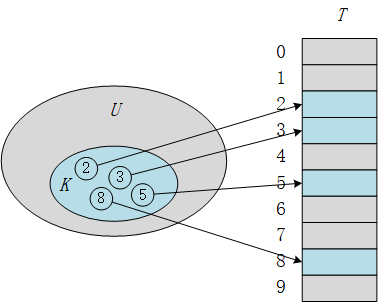
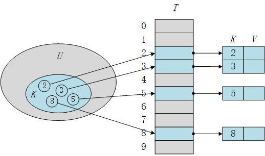
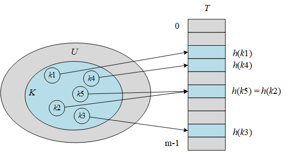
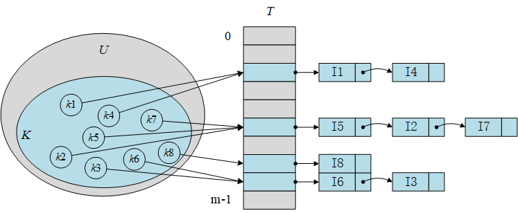
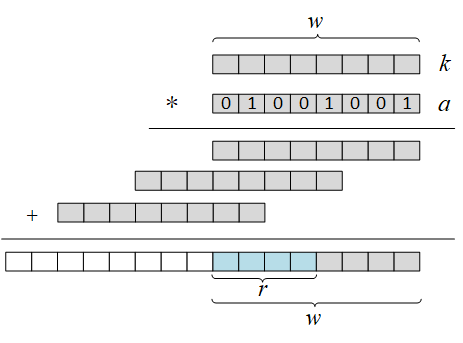

散列表 (Hash Table) 是实现字典 (Dictionary/Map) 的一种有效数据结构。
直接寻址表 (Direct-address Table)
直接寻址表可以使用数组直接实现，数组 $T[0..m-1]$ 的每个位置（槽，slot）对应于全域中一个关键字，元素的值直接存放到数组的槽中。此时，数组的下标即元素的关键字，数组的内容即元素的值。

采用这样的设计必须由某种方法来来确定某个槽是否为空，例如约定某个特殊值为空。更进一步，我们可以将元素（键值对）存放到表外的一个对象，再由表中某个槽的指针指向该对象。这样槽中的值都存储了一个指向表外元素的对象，因此可以使用 null 空指针来表示该槽为空。

经过改造的直接寻址表不仅可以方便的表示槽空的情况，也统一了槽中的数据类型，即都是元素指针，因此也能表示更加丰富的值类型，例如字符串或者自定义数据类型等。但也付出了额外的空间来存储元素，通常不需要在元素中存储关键字域，因为通过对象在表中的下标就可以得到关键字。
直接寻址表的字典操作实现很简单，并且执行速度很快，只需 $O(1)$ 时间。但同时也很明显，直接寻址表具有两个显著的缺陷，这表现在
- 关键字不一定是一个整型数字 (Integer)。
- 巨大的内存占用。
散列表
散列表是直接寻址表概念的推广，每个位置（槽）存储一个关键字。
- 全域 U : 所有可能的关键字集合
- 实际域 K : 实际存储的关键字集合
- 位置数 M : 表中可存储关键字的最大数量
在直接寻址表中 U = K = M，然而在散列表中，U 远远大于 K。
预散列 (Pre-hash)
对于关键字不一定是整型数字的问题，我们可以采用预散列 (prehash) 将关键字域映射为一个自然数集 $N={0,1,2,…}$。通过预散列，每个关键字将会被解释为一个自然数（可能很大）。
这样的方式有很多，例如 Python 中内置的 hash() 函数就可以完成类似的过程 hash(object) -> integer。Java 中的 Object 类也提供了 hashCode() 成员函数来完成将各种类型转换为整数，并且支持用户在定义自己的数据类型时重写 hashCode 方法。笔者认为 hashCode 是更好的名字，因为 hash 这个名字应该留给下一节的散列过程。
散列 (hashing)
对于第二个问题，我们注意到直接寻址表中开辟了大量的内存用以存放空指针，这是不需要的，因此我们设法将全域 U 缩减到一个合理的规模 M，这样表中只需 M 个空间即可。
很明显，在直接寻址方式下，具有关键字 k 的元素被存放在槽 k 中，但缩减后的表明显不再具有关键字和槽一一对应的特性，因此我们需要散列 (hashing) 来完成对应过程。在散列方式下，该元素存放在槽 h(k) 中，即利用散列函数 (hash function) h，由关键字 k 计算出槽的位置。实际上 h 是一种映射，它将关键字的全域 U 映射到散列表 T[0..m-1] 的槽位上。即:
散列函数的目的是缩小处理的规模，将需要处理的值从 U 缩减到 m，降低空间开销，并且结合预散列过程，将任意类型的关键字，尽量均匀地散列为数组的索引。
碰撞 (collision)
对于任意的 k，有确定的 h(k) 与之对应，这意味着相同的关键字将会得到完全相同的散列值，但不可避免的会产生另一个问题：两个关键字可能被映射到同一个槽中，称为碰撞 (collision)。即 $h(k_i)=h(k_j)$，但是 $k_i \not = k_j$。

我们可以精心设计散列函数来尽力避免碰撞的产生，散列函数 h 是确定的，某一给定输入 k 始终产生相同的结果 h(k)，但是由于 $|U|>m$，因此一定会有散列值相同的关键字，因此完全避免碰撞是不可能的。解决碰撞可以通过链接法或开放寻址法来解决，不同的方式也决定了散列表的具体实现。
链接散列表 (Hashing with Chaining)
链接法解决碰撞的思路十分简单：把散列到一个槽中的所有元素放入链表中。基于这种策略的散列表称为链接散列表。

性能分析
在进行分析之前，假设散列函数具有简单均匀散列 (simple uniform hashing) 特性，即：任何元素散列到每个槽中的可能性是相同的，且与其他元素被散列到什么位置上是无关的。
查找一个给定关键字的元素需要多长时间？显然，最坏的情况就是所有的元素都被散列到一个槽中，散列表退化为链表，此时查找时间为 $\Theta(n)$。在简单均匀散列的条件下，对于 n 个元素，m 个槽位的散列表，每条链的平均长度为 $n/m$，将其定义为装载因子 (load factor)，用 $\alpha$ 表示。因此，一次不成功的查找最多需要检查 $\alpha$ 个元素，因此期望时间为 $O(1+\alpha)$，但需要 $m=O(n)$。
我们知道插入和删除操作最坏情况下需要 $O(1)$ 时间，因此可以说全部的字典操作平均情况下都可以在 $O(1)$ 时间完成。
散列函数
一个好的散列函数应当（近似地）满足简单均匀散列的假设。同时，由于预散列过程的存在，所有的关键字假定为自然数。
除法散列法
最简单散列就是除法散列，通过一次将 k 对 m 取余操作即可完成散列，速度很快，且可以保证散列值在 [0, m-1] 范围内。散列函数为：
注意，m 不应该是 2 的幂，因为如果 $m=2^p$，则 $h(k)$ 就是 k 的 p 个最低位数字，这样使得关键字和散列值相关性很强，因此散列值的分布特性很差，从而影响性能。推荐的 m 取值为与 2 的整数幂不太接近的质数。
乘法散列法
乘法散列法的散列函数为：
- w 是 k 的二进制位数
- a 是与 k 具有相同位数的一个随机数，即 $0 \le a \le 2^w - 1$
- r 是 m 的二进制位数，即 $m = 2^r$
以上公式图形化解释如下，最后得到蓝色区域为散列值。因为 r 是 m 的二进制位数，因此可以保证最后散列值在 [0, m-1] 范围内。

全域散列 (Universal Hashing)
数据结构实现
首先，作为一个支持字典操作的数据结构，链接散列表至少需要支持字典操作：
- 插入 Insert(key, value)
- 查找 Search(key) -> value
- 删除 Delete(key)
从数据结构的角度看，为了支持这些操作，在散列表内部必须实现散列函数 hash(key) -> int 来支持散列操作，散列函数应当包括预散列和散列两个过程。
在性能分析中，我们知道如果要保证 $O(1)$ 的性能，需要 $m=O(n)$，另外也出于对空间的考虑，m 不应该是固定的，而是应该根据插入元素数据量的大小动态调节，因此应当支持 resize() 操作，使得散列表可以根据 n 的值调整 m，通过动态扩容和缩容达到一种占用空间和运行时间上的平衡。
开放寻址散列表 (Hashing with Open Addressing)
回想一下链接法实现的散列表，当表中仍有空位的时候，碰撞的值仍然会新开辟一个空间（链表中新增的节点）来存储碰撞的元素。开放寻址法的思路是：通过某种探测方式，利用数组中的空槽来存储碰撞的元素。基于这种策略的所有的方法被称为开放寻址(Open Addressing)。开放寻址法不使用链表存储元素，而直接使用数组存储元素，其中每个槽只存储一个元素，因此 $m \ge n$，负载因子 $\alpha \le 1$。
在开放寻址中，插入一个元素需要探查/探测 (probe) 散列表的各项，直到找到一个空槽来放置元素。
探测方法 (Probing)
给定一个普通的散列函数作为辅助散列函数 $h^{\prime}:U\rightarrow{0,1,…,m-1}$
线性探测 (Linear probing)
线性探测采用的散列函数为：
二次探测 (Quadratic probing)
二次探测采用的散列函数为：